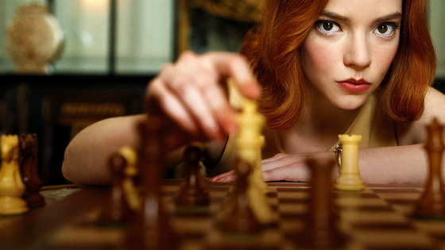

Auto Battler. 오토배틀러는 타워 디펜스 장르에 PVP 요소를 랜덤 이동과 랜덤 전투 요소를 결합한 게임 장르이다. 타일과 기물 배치를 이용해 대전을 펼친다는 점에서는 SRPG 장르 요소도 일부 차용했다고 볼 수 있다.
오토배틀러는 다음과 같은 특징을 지닌다.
플레이어는 유닛들을 구매할 수 있고, 같은 유닛을 여러 개 구매시 합쳐지며 강화할 수 있다.
종족, 직업 등 특정 카테고리에 속하는 유닛을 여러 개 구매시 이로운 효과를 주는 시너지를 얻게 된다.
원하는 유닛만으로 덱을 구성할 수는 없으며, 랜덤으로 여러 기물들이 제시되고 이를 이용해 필드를 구성하게 된다.
전투는 격자로 나뉜 판 위에서 이뤄진다. 플레이어는 격자 위에 어떤 유닛을 어디에 배치할지 결정한다.
고정된 적이 아니라 상대편 플레이어와 PVP 전투를 한다. 전투는 자동으로 이루어진다.
서든 데스(Sudden Death) 형식으로 진행되며 라이프를 전부 소진하면 패배하게 된다. 최후까지 남은 1명이 승리자가 된다.
